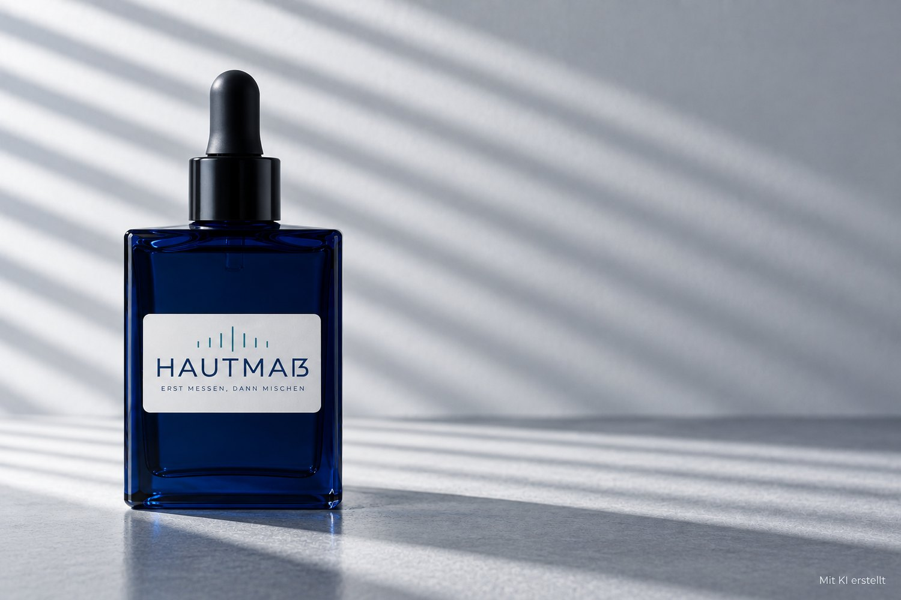

Mit Hautmaß kaufst du deine Pflege nicht mehr auf Verdacht.
Individuell gemischtes Gesichtsserum · 39 Euro für 30 ml
Das halbe Badregal steht voll mit angebrochenen Tiegeln. Nichts davon hat gepasst. Das Problem ist selten die Haut. Das Problem ist das Raten.
Wir messen erst und mischen dann.

Hautmaß – dein Gesichtsserum, gemischt nach deinen Messwerten.
Produktbild mit KI erstellt.
In einer Hautmaß-Filiale messen wir Feuchtigkeit und Talgproduktion an mehreren Stellen in deinem Gesicht. Zusätzlich fragen wir nach der Empfindlichkeit deiner Haut. Die Hautanalyse dauert rund 15 Minuten und ist kostenlos.
Aus deinen Messwerten wählen wir die passenden Wirkstoffe und ihre Konzentrationen. Gemischt wird dein Serum in unserem eigenen Labor.
Dein Serum kommt regelmäßig zu dir nach Hause. Du kannst zwischen monatlicher Lieferung und einer Lieferung alle zwei Monate wählen. Einmal im Jahr messen wir deine Haut kostenlos nach und passen die Wirkstoffauswahl an, wenn sich die Werte verändert haben.
Du siehst, welche Wirkstoffe dein Serum enthält und in welcher Konzentration sie eingesetzt werden. Die Auswahl folgt deiner Hautanalyse. Auch das Mischdatum steht auf deiner Flasche. So kann eine beispielhafte Wirkstoffauswahl bei wenig Feuchtigkeit und hoher Talgproduktion aussehen.
Erst messen, dann mischen.
Individuelles Gesichtsserum
Die Auswahl folgt deiner Hautanalyse: Feuchtigkeit, Talgproduktion und Empfindlichkeit. Fehlt deiner Haut Feuchtigkeit, können Glycerin und Hyaluronsäure helfen, sie zu binden. Bei hoher Talgproduktion wählen wir die Lipide leicht statt reichhaltig. Weggelassen werden sie nicht — auch fettige Haut braucht pflegende Lipide. Ist deine Haut empfindlich, überwiegen beruhigende Wirkstoffe wie Panthenol. So entsteht deine Zusammenstellung aus deinen Messwerten.
Jede Zusammensetzung sieht anders aus. Die Angaben in der Karte sind eine beispielhafte Wirkstoffauswahl für ein erfundenes Produkt, keine geprüfte Herstellungsrezeptur.
Hautmaß ist kosmetische Pflege und keine medizinische Behandlung.
Wir messen und beurteilen kosmetische Hautmerkmale. Eine Hauterkrankung können wir damit nicht diagnostizieren oder behandeln. Bei behandlungsbedürftigen Hautproblemen ist eine dermatologische Untersuchung erforderlich.
In unseren Hautmaß-Filialen messen wir die Feuchtigkeit und die Talgproduktion deiner Haut. Dazu sprechen wir mit dir über ihre Empfindlichkeit. Wähle einen Standort in deiner Nähe und vereinbare deinen kostenlosen Termin.
Filialen, Adressen, Telefonnummern und E-Mail-Adressen sind erfunden. Die Nummern stammen aus dem Bereich, den die Bundesnetzagentur für Film und Fernsehen reserviert hat — dort ist niemand erreichbar.
Fiktive Beispielstimmen für die Kursübung — die Personen und ihre Aussagen sind erfunden.
„Ich weiß, was in meinem Serum steckt. Früher habe ich verschiedene Cremes ausprobiert. Jetzt kann ich nachvollziehen, warum bestimmte Wirkstoffe für meine Haut ausgewählt wurden.“Anke M. – Beispielstimme
„Die Hautanalyse war verständlich. Mir wurde erklärt, was meine Messwerte bedeuten und wie daraus mein individuelles Serum zusammengestellt wird.“Tobias R. – Beispielstimme
„Ich muss nicht ständig neu auswählen. Mein Serum kommt regelmäßig nach Hause. Ich weiß, welche Wirkstoffe enthalten sind. Mein Abo kann ich monatlich kündigen.“Sandra K. – Beispielstimme
„Der Termin hat wirklich nur eine Viertelstunde gedauert. Ich hatte mit einem langen Beratungsgespräch gerechnet. Gemessen wurde an mehreren Stellen, danach war ich wieder draußen.“Jens O. – Beispielstimme
„Die Prozentangaben haben mich überzeugt. Auf meinen alten Cremes stand eine lange Liste ohne Mengen. Jetzt sehe ich, wie viel von was enthalten ist.“Kerstin B. – Beispielstimme
„Ein Sofort-Effekt ist es nicht. Nach vier Wochen merke ich einen Unterschied. Wer nach drei Tagen etwas erwartet, wird enttäuscht sein.“Daniela P. – Beispielstimme
„Das Pausieren hat im Urlaub funktioniert. Zwei Monate ausgesetzt, danach lief die Lieferung weiter. Anrufen musste ich dafür nicht.“Markus H. – Beispielstimme
Du kannst weiter Cremes durchprobieren, oder du lässt deine Haut einmal messen. Danach mischen wir dein Serum aus deinen Werten und es kommt regelmäßig zu dir nach Hause.
39 Euro für 30 ml
Die Hautanalyse ist kostenlos. Dein Abo ist monatlich kündbar.
Termin buchenDu kannst dein Abo im Kundenkonto verwalten. Die Lieferung lässt sich für ein bis drei Monate pausieren. Dein Abo ist monatlich kündbar. Dafür musst du weder anrufen noch eine E-Mail schreiben.